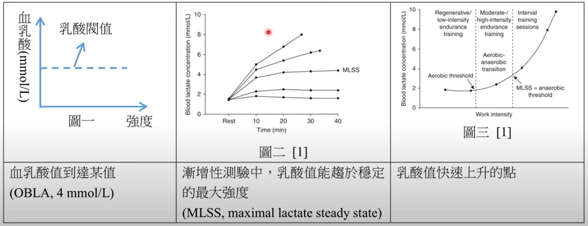
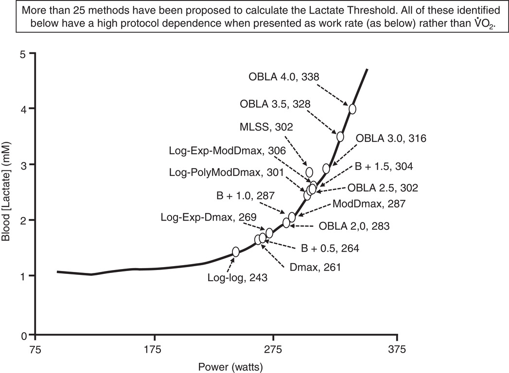
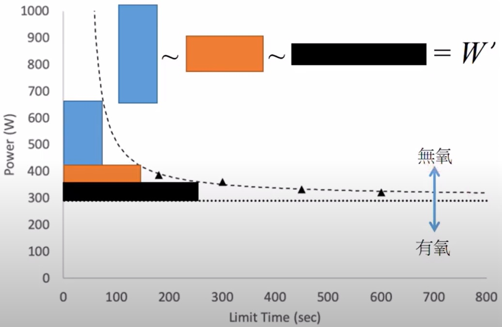
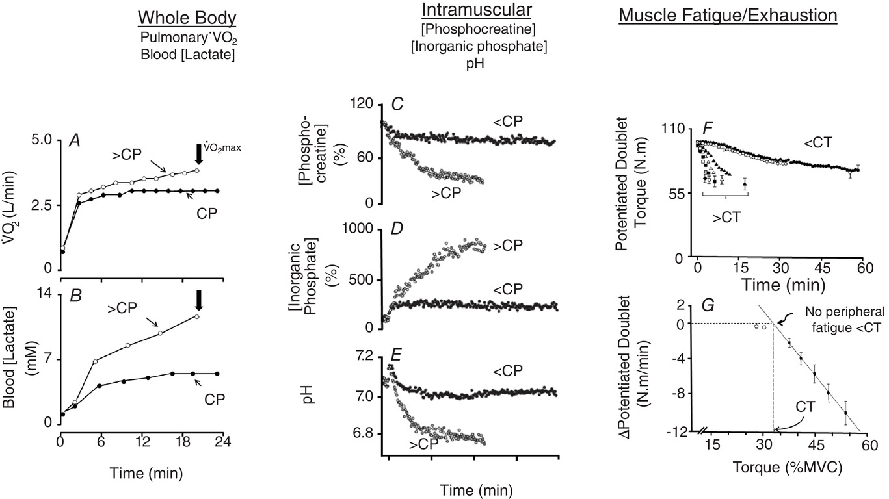
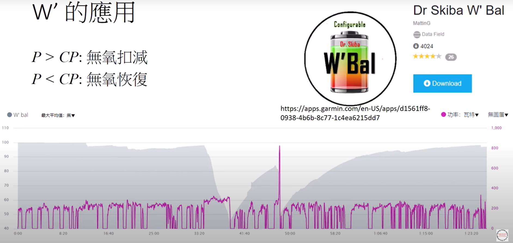

CP 與 FTP 的介紹與生理意義
…
一、運動科學中乳酸閥值的定義
在運動科學中通常會使用，最大攝氧量與乳酸閥值及其他數據，然後搭配其他數據，例如跑步為速度 自行車為功率，來去衡量一個運動員的能力。 乳酸閥值在運動科學上有25種的定義，這邊大致上分三類
-
乳酸濃度達到 4 mmol/L 就稱作乳酸閥值，又稱作 OBLA
-
另一個是是最大可維持的穩態乳酸，簡稱MLSS
此種定義跟FTP很接近，在測驗上特別耗時與耗乳酸試紙，會在一個強度去維持比較長的時間，所以測下來有時候會到一小時以上 -
乳酸拐點，當乳酸快速累積時的點為乳酸閥值
|  |
|---|
| 圖一：乳酸閥值定義的分類 [1] |
每種測試的結果都不一樣，所以得到的 LTP 也會不一樣，而乳酸閥值的測驗方式通常會在室內做，先從一個比較低的瓦數開始去踩，會固定一段時間 。
|  |
|---|
| 圖二：乳酸閥值定義的分類 [2] |
根據乳酸閥值的定義有不同，如果是選乳酸拐點的話時間較短，MLSS 的話時間會較長，到達時間後再去增加瓦數，根據乳酸閥值的定義不同就會有不同的結果，當達到定義的閥值之後就是乳酸閥值，所以這個時候就可以停止測驗，如果還有測心律的話，得到的心律即為乳酸閥值心律，一般這種測驗都是在實驗室內完成的，所以又叫做實驗室的測驗，但是對於非職業選手而言，要得到 LT 或是 VO2max 是很困難的。
而可攜式功率計的發明，讓功率計不再限於室內使用，讓使用者能夠自行作測驗，這個稱為場測 (Field test)。場測的方法有以下兩種
- Functional Threshold Power FTP 測驗
- Critical Power CP 測驗
二、Functional Threshold Power FTP 的定義
FTP 的發明者為 Coggan 博士，是一種只使用功率計就可以測得的一個數據，定義為
FTP is the highest power that a rider can maintain in a quasi–steady state without fatiguing.
FTP 的定義並沒有說明能維持多久的時間，那為什麼許多人都會說，FTP是一小時的最大平均功率呢？，可以繼續往下看他的敘述，這段敘述就是在 Coggan 和 Hunter 合著的書中[3]第三章有提到
When power exceeds FTP, fatigue will occur much sooner (generally after approximately one hour in well-trained cyclists), whereas power just below FTP can be maintained considerably longer.
當超過FTP的瓦數時就會非常快速的疲勞，疲勞就會快速的發生，所以可以看的出來 FTP 在生理上，比較接近乳酸閥值的功率，當超過 FTP 的瓦數乳酸就會快速累計，乳酸快速累計就會感覺到疲勞。另外也在後面註明了，在良好訓練的車手可以維持約一小時，所以就是 FTP 能夠維持一小時的來源，但我們等下會看到 FTP 不是只能維持一小時，或是達不到一小時的瓦數就不是 FTP。
三、FTP 的測驗方式
關於 FTP 的測驗方式官方有提供兩種，
- 一小時或是 40 km ITT 的平均功率 所以這又是一個 FTP 可以維持一小時的說法。
- 5+20 測驗方式，這個 5 分鐘的功率大概是 VO2max 的功率，然後休息一段時間後再去，測 20 分鐘的最大平均功率，最後取這段 20 分鐘的平均功率 * 0.95，就是 FTP 的數值，為 Hunter 博士提出。關於 5+20 的測驗，網路上都有對這兩種方式有詳細說明，這邊就不再另外說明。
其餘的 8+8 或是漸增測驗，甚至只測20分鐘最大功率，然後在乘上某個數字等的方式，都未在書中提到所以就不再提其他測驗方式，但是不論是哪種測驗方式，都很難第一次就得到準確的數值，因為第一次踩想要維持在那個功率是很困難的，要不就是過高要不就是過低，所以通常建議測第二次以上會比較準確，這種測驗方式是可以在戶外測的，所以這種測驗我們叫做場測
四、FTP 能持續多久
雖然FTP的測驗方式時間有兩種，一種是一小時，另一種是 20 分鐘，但是實際上能撐多久呢，因為每個人的意志力不同，所以能撐的時間也不同，根據書中的說法，FTP 在一些運動科學的文獻上面，FTP 的強度大概可以持續 30~70 分鐘，所以其實也不再太執著於一小時的最大平均功率，當然對於職業車手甚至是頂級選手，因為都需要比 40 km ITT，40 km ITT 的時間大概就是一小時，所以才會有 FTP 就是，一小時最大平均功率的說法，但這也是在當時發明時是這關係，如果以 2022 環法第 20 站來講，長度也大概是 40 km，但是第一名花不到 50 分鐘就結束了，所以是不是 40 km ITT 是否可以，繼續用在 FTP 測驗也是打一個問號
五、FTP 的應用
FTP 這個數值有一個整套計算騎乘強度的算法，例如有功率計又有碼表，在騎乘時又有使用功率計，輸入 FTP 之後 像這個是 GARMIN 的，就會幫你算出這些數據，像 NP/IF/TSS 就是需要 FTP 才能算出來，這些數據網路上也有很多資訊，就不另外再多做介紹。
 |
|---|
| 圖五：註冊並訂閱網站使用表現預估功能 |
六、Critical Power/Speed CP 的定義
在高強度運動時，該的瓦數/速度與能持續的時間關係會衰減的非常快，兩者大概是個反比關係，且發現將兩者關係作圖可得到一條曲線，且曲線上任一點與兩軸所圍成的矩形面積幾乎相等，所以就利用這個關係找出 CP 與 W’。
|  |
|---|
| 圖三：CP 的定義 [2] |
七、Critical Power/Speed CP 的測驗方式
一般測驗至少需要測 2~3 個部分，通常是 3 分鐘與 12 分鐘的全力測驗，因為這兩個時間很短所以可以一次測完，兩次衝刺中間建議緩和 30~40 分鐘以上。CP 會根據選用的模型不同就會需要測不同的部分，像 我算法的模型 就會多需要 Pmax 的部分。測完後就可以用以下計算機算出你的 CP
八、超過 CP 時的生理反應
我們來看一下超過與低於CP的生理反應，先來看乳酸與攝氧量的反應。
|  |
|---|
| 圖四：超過 CP 時的生理反應 [2] |
當強度維持在CP時，乳酸與攝氧量最後會幾乎維持在一定值，當超過 CP 強度後，乳酸的濃度就會開始快速的累計，VO2 的值也不會再是一個定值了，就表示 CP 是還滿接近在 MLSS 的強度，所以可以把 CP 的強度當作是 MLSS 的強度，所以超過 CP 強度代表乳酸開始快速累計，所以肌肉內的磷基酸與 pH 值開始降低，肌肉也會開始感覺到疲勞，所以可以把CP當作有氧與無氧的強度分界。CP 的訓練區間沒有像FTP分得這麼細，但既然都是接近 MLSS 的強度，個人認為把 CP 當作 FTP，利用 FTP 區間去調整也是可以的，只是 FTP 商業化比較成功，所以通常在碼表軟體上是使用 FTP 的訓練區間。
九、W’ 的意義與應用
無氧能量 W’ 就可以讓你看，超過 CP 時的某個瓦數可以維持多久，一般來說如果算的準的話，當 W’ 為 0 時就是力竭的時候，所以當瓦數超過 CP 就是進入無氧的部分，如果是小於 CP 時就是在恢復時。
|  |
|---|
| 圖五：W' |
可以看到下面這張圖就是在實際騎乘是，GARMIN 碼表幫我算出來 W’ 的扣減跟恢復，不過我不確定是不是也會，幫你算出 CP 跟 W’，所以可以去我的網站，來幫你算出 CP 跟 W’，而 CP 也有自己發展一套計算強度的方式，可以去下載 goldencheetah 這個軟體，裡面就會幫你自動計算出這些數據，可以當作是免費的 WKO，他的介紹可以自行去 GOOGLE，網路上也有很多 所以這邊不另外介紹。
個人觀點
運動科學對於 CP 的研究多於 FTP，但就一般使用者或商用軟體，較多使用 FTP 與其指標和訓練區間。而 CP 測驗較 FTP 簡單且時間較短，能得到的生理指標有 CP 與 W‘。不論是 CP 或是 FTP 都可幫助你訓練，選個方便測驗的就好了。
Ref:
[1] Faude O, Kindermann W, Meyer T. Lactate threshold concepts: how valid are they? Sports Med. 2009;39(6):469-90. doi: 10.2165/00007256-200939060-00003. PMID: 19453206.
[2] Poole DC, Rossiter HB, Brooks GA, Gladden LB. The anaerobic threshold: 50+ years of controversy. J Physiol. 2021 Feb;599(3):737-767. doi: 10.1113/JP279963. Epub 2020 Nov 19. PMID: 33112439.
[3] Training and Racing With a Power Meter 3rd